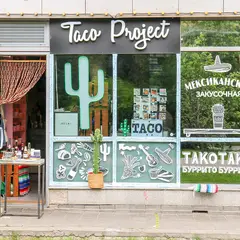
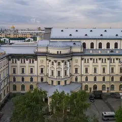
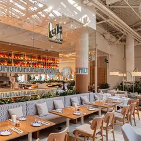
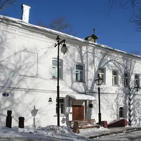

Подборку собрали 3 ноября, прошедшие события скрыты. Свежая афиша — на главной
Будний вечер · данные на 15 октября
Куда сходить вечером после работы
В будний вечер не хочется ехать через весь город. Здесь 144 коротких плана: одна-две точки рядом друг с другом и чек примерно до 3 000 ₽ на человека, 81 из них — в центре. Ниже — 31 вечернее событие в ближайшие будни.
- 144 плана
- 31 событие
Короткие планы на вечер 24 из 144
- Краснопресненские бани · Баня и хамам · м. Улица 1905 года
- 13 минут пешкомРаковарня · Раки и караоке
Финская сауна, хамам и бассейн в Краснопресненских банях, а потом через Трёхгорку в «Раковарню» — раки, морепродукты и караоке до шести утра.
Открыть план: Баня на Пресне и ракиПозвать сюда: Баня на Пресне и раки
Фото: Никонико962, CC BY-SA 4.0 · Wikimedia Commons
- Андроников монастырь · Музей и монастырь · м. Площадь Ильича
- 6 минут пешкомСекрет · Приватный кинотеатр
Прогулка вокруг белых стен Андроникова монастыря, а потом приватный кинотеатр «Секрет»: свой зал с большим диваном, любой фильм и работа до шести утра.
Открыть план: Монастырь и кинозал только для васПозвать сюда: Монастырь и кинозал только для вас
Фото: A.Savin, Free Art License · Wikimedia Commons
- Московский планетарий · Планетарий · м. Баррикадная
- 11 минут пешкомShort talk · Кафе
Звёздное небо под огромным куполом планетария, а потом кафе Short talk: кофе, настольная игра и негромкая музыка выручат, если разговор сначала не клеится.
Открыть план: Планетарий и настолкиПозвать сюда: Планетарий и настолки
Фото: A.Savin, Free Art License · Wikimedia Commons
- Ростокинский акведук · Акведук XVIII века · м. ВДНХ
- 12 минут пешкомИнкубо · Квест с актёрами
В сумерках пройти вдоль каменного Ростокинского акведука 1780-х, а потом хоррор в «Инкубо» — «Пожиратель душ» или неоновая «Ночь в Токио» с сильными актёрами.
Открыть план: Акведук в сумерках и хоррор-квестПозвать сюда: Акведук в сумерках и хоррор-квест
Фото: Dmitry Ivanov., CC BY-SA 4.0 · Wikimedia Commons
- Селезнёвские бани · Баня · м. Новослободская
- 16 минут пешкомДепо · Фудмолл
Хорошо пропариться в Селезнёвских, а потом в Депо: 75 кафе, каждый берёт своё.
Открыть план: Баня и фудмоллПозвать сюда: Баня и фудмолл
Фото: Александр Спиридонов, CC BY 3.0 · Wikimedia Commons
- Краснопресненские бани · Баня и хамам · м. Улица 1905 года
- 18 минут пешкомHite · Корейский ресторан и караоке
Хамам и бассейн, а после — своя караоке-комната с грилем.
Открыть план: Баня, потом караокеПозвать сюда: Баня, потом караоке
Фото: Никонико962, CC BY-SA 4.0 · Wikimedia Commons
- Парк Горького · Парк · м. Октябрьская
- 11 минут пешкомSUBSTANCE · Бильярд-бистро
Прогулка по набережной и пара партий в бильярд-бистро SUBSTANCE.
Открыть план: Бильярд в Парке ГорькогоПозвать сюда: Бильярд в Парке Горького
Фото: A.Savin, Free Art License · Wikimedia Commons
- Музей Булгакова · Музей · м. Маяковская
- 8 минут пешкомЗойка · Ресторан
«Нехорошая квартира» №50 в музее Булгакова (по четвергам открыт до 21:00), а потом ужин в «Зойкиной квартире» на Патриарших, где остановилось время.
Открыть план: Булгаковский вечерПозвать сюда: Булгаковский вечер
Фото: Usolt, CC BY 3.0 · Wikimedia Commons
- Чистые пруды · Бульвар и пруд · м. Чистые пруды
- 12 минут пешкомKeep · Гастробар
Круг по Чистым прудам в сумерках, потом свечи и росписи с ангелами в готическом гастробаре Keep во дворах Мясницкой.
Открыть план: Бульвары и готический ужинПозвать сюда: Бульвары и готический ужин
Фото: Vasilii Martynov, CC BY-SA 4.0 · Wikimedia Commons
- Дом Гоголя · Музей · м. Арбатская
- 4 минуты пешкомХудожественный · Кинотеатр
Дом, где Гоголь сжёг второй том «Мёртвых душ», и вечерний сеанс в старейшем кинотеатре Москвы.
Открыть план: Вий, Гоголь и киноПозвать сюда: Вий, Гоголь и кино
Фото: Shakko, CC BY-SA 4.0 · Wikimedia Commons
- Культурный центр ЗИЛ · Культурный центр · м. Автозаводская
- 13 минут пешкомStrEAT · Фудхолл
Лекция или кино в конструктивистском ДК ЗИЛ, а потом фудхолл StrEAT в корпусе завода «Динамо»: дагестанские хинкалы или баббл-ти — каждый берёт своё.
Открыть план: ДК ЗИЛ и уличная едаПозвать сюда: ДК ЗИЛ и уличная еда
Фото: NVO, CC BY-SA 3.0 · Wikimedia Commons
- Парк «Зарядье» · Парк · м. Китай-город
- 9 минут пешкомBrasserie Lambic · Пивной ресторан
Прогулка по Парящему мосту, потом мидии и двести сортов пива в брассери за десять минут.
Открыть план: Зарядье и бельгийское пивоПозвать сюда: Зарядье и бельгийское пиво
Фото: Alina Vozna, CC BY-SA 4.0 · Wikimedia Commons
- Московский планетарий · Планетарий · м. Баррикадная
- 2 минуты пешкомBlinkGame · Компьютерный клуб
Звёздный зал под огромным куполом планетария, а через две минуты лаунж с четырьмя PS5: сыграть вдвоём на желание.
Открыть план: Звёзды и PS5 на двоихПозвать сюда: Звёзды и PS5 на двоих
Фото: A.Savin, Free Art License · Wikimedia Commons
- Музей советских игровых автоматов · Музей-аркада · м. Кузнецкий Мост
- 7 минут пешкомДебют · Бистро с театральной концепцией
Сначала «Морской бой», «Городки» и «Танкодром» в Музее советских игровых автоматов на Кузнецком Мосту (открыт до 21), потом в семи минутах — ужин в «Дебюте» во дворе «Столешники Хаус»: меню разбито на акты, а в зале иногда играют спектакли.
Открыть план: Игровые автоматы и ужин по актамПозвать сюда: Игровые автоматы и ужин по актам
Фото: Hanno Böck, CC0 · Wikimedia Commons
- Музей русского импрессионизма · Музей · м. Белорусская
- 1 минута пешкомБольшевик Лофт · Ресторан со стендапом
Коровин, Серов и Кустодиев в Музее русского импрессионизма, а в соседнем краснокирпичном корпусе бывшей фабрики «Большевик» — ужин и стендап в Большевик Лофт.
Открыть план: Импрессионисты и стендап на фабрикеПозвать сюда: Импрессионисты и стендап на фабрике
Фото: Sergey A. Demidov, CC BY 4.0 · Wikimedia Commons
- KGallery Bookcafe · Книжный и кофейня в усадьбе · м. Китай-город
- 1 минута пешкомКабаре «Шум» · Кабаре
Кофе и альбомы по искусству в KGallery, а потом там же, в усадьбе Филипповых, — петербургское кабаре «Шум» с чтениями под баян и спектаклями.
Открыть план: Кабаре и книжный в усадьбеПозвать сюда: Кабаре и книжный в усадьбе
Фото: Никонико962, CC BY-SA 4.0 · Wikimedia Commons

- ROKU · Компьютерный клуб · м. Новослободская
- 3 минуты пешкомTaco Project · Мексиканское кафе
Пара часов в премиальном кибер-лаундже у Новослободской с топовым железом и VIP-комнатами, а через три минуты тако с открытой кухни в Taco Project.
Открыть план: Катка в ROKU и такоПозвать сюда: Катка в ROKU и тако
Фото: Stolbovsky, CC BY-SA 3.0 · Wikimedia Commons
- Rizz Cyber & Lounge · Компьютерный клуб · м. Смоленская
- 2 минуты пешкомАрбат · Пешеходная улица
Катка в переулках у Смоленской, а потом проветрить голову на Старом Арбате — две минуты пешком.
Открыть план: Кибер-лаундж и ночной АрбатПозвать сюда: Кибер-лаундж и ночной Арбат
Фото: Alex 'Florstein' Fedorov, CC BY-SA 4.0 · Wikimedia Commons
- WINSTRIKE Arena · Компьютерный клуб · киберарена · м. Лубянка
- 1 минута пешкомAnvio VR · VR-арена
WINSTRIKE Arena и Anvio VR — в одном здании на Лубянке: сначала катка за ПК, потом рубилово в шлемах.
Открыть план: Киберарена и VR в одном домеПозвать сюда: Киберарена и VR в одном доме
Фото: A.Savin, CC BY-SA 3.0 · Wikimedia Commons

- Московская консерватория · Концертный зал · м. Охотный ряд
- 1 минута пешкомUgolёk · Ресторан
Живая классика в Консерватории и ужин через дорогу — там всё готовят в дровяных печах.
Открыть план: Концерт и ужин на дровахПозвать сюда: Концерт и ужин на дровах
Фото: A.Savin, Free Art License · Wikimedia Commons

- Mega Ice в «Авиапарке» · Крытый каток · м. ЦСКА
- 1 минута пешкомLali · Узбекский ресторан
Каток на 4-м этаже «Авиапарка» работает круглый год: прокат без залога, в пятницу и субботу — до 23:00. Ужинать — в Lali в том же ТЦ, никуда не выходя на холод.
Открыть план: Крытый каток и ужин в «Авиапарке»Позвать сюда: Крытый каток и ужин в «Авиапарке»
Фото: A.Savin, Free Art License · Wikimedia Commons
- Патриарший мост · Пешеходный мост · м. Кропоткинская
- 4 минуты пешкомСыроварня · Ресторан с сыроварней
Вид на Кремль с Патриаршего моста и ужин на «Красном Октябре», где сыр варят при гостях.
Открыть план: Мост и сыроварняПозвать сюда: Мост и сыроварня
Фото: NVO, общественное достояние · Wikimedia Commons
- Парк 850-летия Москвы · Парк · м. Марьино
- 6 минут пешкомЧеддер · Пивной ресторан
Пройтись по набережной Парка 850-летия Москвы, а потом в «Чеддер»: пиво и сидр в фирменных бокалах, бургеры и трансляции — бармены расскажут про каждый сорт.
Открыть план: Набережная в Марьине и сидрПозвать сюда: Набережная в Марьине и сидр
Фото: Brateevsky, CC BY-SA 3.0 · Wikimedia Commons

- Музей «Огни Москвы» · Музей · м. Лубянка
- 4 минуты пешкомКК · Винный бар
Музей городского освещения в палатах XVII века и винный бар КК рядом.
Открыть план: Огни Москвы и виноПозвать сюда: Огни Москвы и вино
Фото: Николай Аввакумов, CC BY 3.0 · Wikimedia Commons


Вечерние события в будни 12 из 31
Ленком Марка Захарова, Основная сцена · м. Пушкинская · от 3 200 ₽ · 16+
Спектакль Владимира Панкова об Остапе Бендере: динамично, музыкально и смешно. Можно звать и девушку, и друзей.
Подробнее: Великий комбинаторПозвать сюда: Великий комбинаторБилеты : Великий комбинатор (страница с билетами, откроется в новой вкладке)
Театр Моссовета, Основная сцена · м. Маяковская · 500–5 000 ₽ · 12+
Музыкальный спектакль по рок-опере Уэббера и Райса идёт в Театре Моссовета с 1990 года — один из самых долгоживущих хитов Москвы. 2,5 часа с антрактом.
Подробнее: Иисус Христос — суперзвездаПозвать сюда: Иисус Христос — суперзвездаБилеты : Иисус Христос — суперзвезда (страница с билетами, откроется в новой вкладке)
Театр Табакова на сцене «Современника» · м. Чистые пруды · 3 000–35 000 ₽ · 16+
Пьеса Александра Галича об отце и сыне, главную роль играет Владимир Машков. Полтора часа сильной драмы; билеты разбирают заранее, 21 октября уже аншлаг.
Подробнее: Матросская ТишинаПозвать сюда: Матросская ТишинаБилеты : Матросская Тишина (страница с билетами, откроется в новой вкладке)
Концертный зал «Москва» · м. Технопарк · от 1 300 ₽ · 18+
Ольга Малащенко шутит об отношениях без фильтров, в том числе на рискованные темы. Отличный повод собраться с подругами.
Подробнее: Ольга МалащенкоПозвать сюда: Ольга МалащенкоБилеты : Ольга Малащенко (страница с билетами, откроется в новой вкладке)
Мастерская Петра Фоменко, Новая сцена · м. Москва-Сити
Шекспировская неразбериха влюблённых, фей и эльфов с фоменковской лёгкостью. После такого спектакля хочется гулять, а не ехать домой.
Подробнее: Сон в летнюю ночьПозвать сюда: Сон в летнюю ночьБилеты : Сон в летнюю ночь (страница с билетами, откроется в новой вкладке)
Atmosphere · м. Москва-Сити · 3 500–11 500 ₽ · 16+
Большой сольник Ёлки часа на три: «Прованс», другие хиты и новые песни, много разговоров с залом. Вечер накануне выходного 4 ноября — повод выбраться вдвоём.
Подробнее: ЁлкаПозвать сюда: ЁлкаБилеты : Ёлка (страница с билетами, откроется в новой вкладке)
ЦСКА Арена · м. ЗИЛ · от 1 700 ₽ · 16+
Большой сольник Pyrokinesis накануне выходного 4 ноября: мрачная лирика, гитары и зал, который поёт хором.
Подробнее: PyrokinesisПозвать сюда: PyrokinesisБилеты : Pyrokinesis (страница с билетами, откроется в новой вкладке)
Театр Российской армии, Большая сцена · м. Достоевская · 5 000–44 000 ₽ · 6+
Юбилейная серия сольных концертов: знаменитые песни, новые вещи и разговор с залом о жизни. Вечеров много — до 8 ноября, можно выбрать удобный.
Подробнее: Александр РозенбаумПозвать сюда: Александр РозенбаумБилеты : Александр Розенбаум (страница с билетами, откроется в новой вкладке)
Live Арена · Сколково (МЦД-1) · от 3 500 ₽ · 6+
Пелагея в праздничный вечер 4 ноября: фолк, живой сильный голос и спокойная атмосфера. Хороший концерт для двоих.
Подробнее: ПелагеяПозвать сюда: ПелагеяБилеты : Пелагея (страница с билетами, откроется в новой вкладке)
РАМТ, Большая сцена · м. Охотный ряд · 18+
Роман Дэниела Киза в постановке Юрия Грымова: эксперимент превращает простодушного Чарли в гения и заставляет спросить, что важнее ума.
Подробнее: Цветы для ЭлджернонаПозвать сюда: Цветы для ЭлджернонаБилеты : Цветы для Элджернона (страница с билетами, откроется в новой вкладке)
VK Stadium · м. Сокол · от 3 800 ₽ · 6+
Новая программа NILETTO «360°»: танцевальные хиты, которые подпевает весь зал. Лёгкий вариант на праздничный вечер.
Подробнее: Niletto. Программа 360°Позвать сюда: Niletto. Программа 360°Билеты : Niletto. Программа 360° (страница с билетами, откроется в новой вкладке)
Собор Непорочного Зачатия · м. Краснопресненская · от 1 000 ₽ · 6+
Орган в четыре руки и музыка о ночи — от «Лунной сонаты» до «Маленькой ночной серенады». Вечер праздничного 4 ноября в неоготическом соборе на Пресне.
Подробнее: Музыка ночи на большом органе. Дуэт ArtbeneПозвать сюда: Музыка ночи на большом органе. Дуэт ArtbeneБилеты : Музыка ночи на большом органе. Дуэт Artbene (страница с билетами, откроется в новой вкладке)
Фото: A.Savin, Free Art License · Wikimedia Commons

Как позвать
- Выбери план, место или событие — в карточке адрес, цены и маршрут в Яндекс Картах.
- Нажми «Позвать сюда» — соберётся приглашение-игра для свидания или голосование для компании.
- Отправь ссылку в любой мессенджер: тебе ответят, а компания отметит, куда и когда может. Бесплатно и без регистрации.